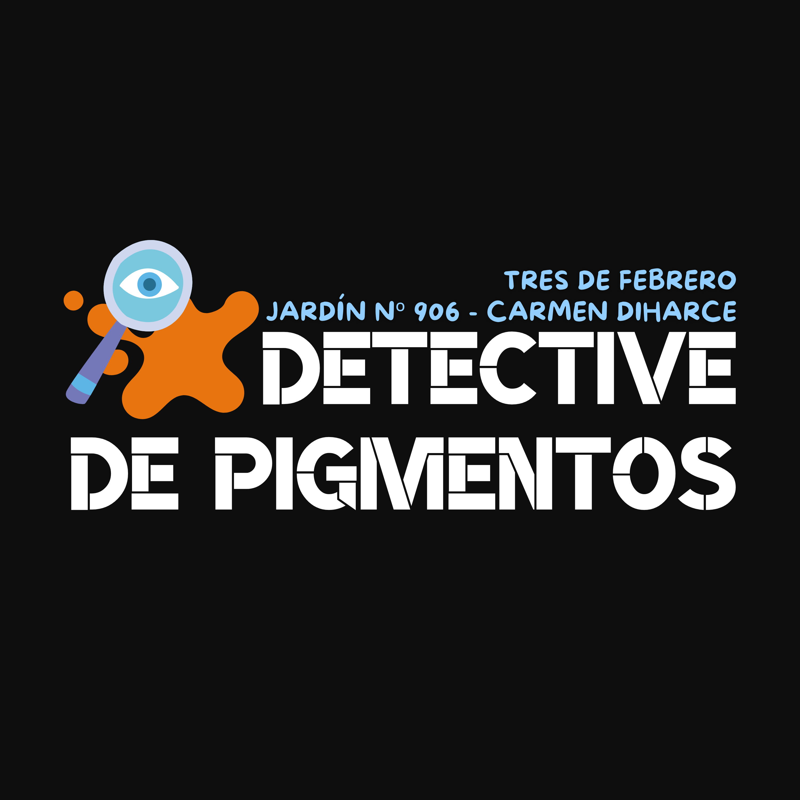

Aparecerán 4 pigmentos en cada nivel...
pero uno es diferente a los demás.
¿Podés detectar cuál es el intruso?
Hay 10 niveles y 20 segundos para completarlos
¡Tocá EMPEZAR para jugar!
EMPEZAR
Nivel: 1 - Tiempo restante: 20s
Reiniciar
REINCIAR